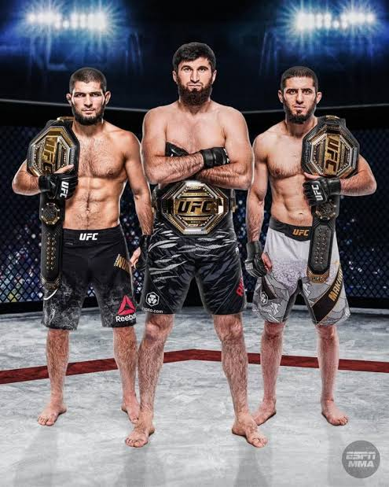
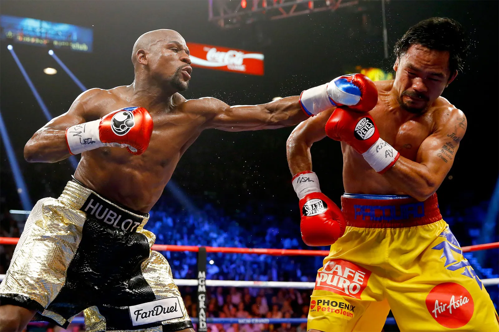
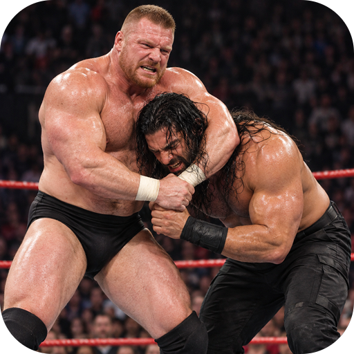
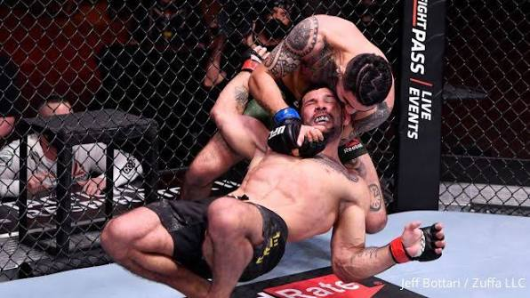
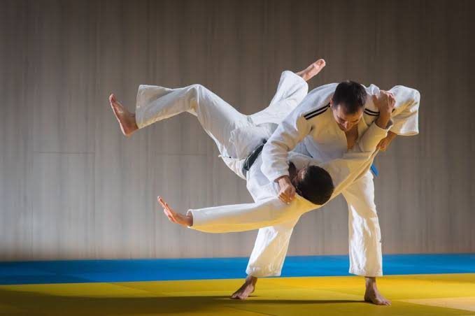
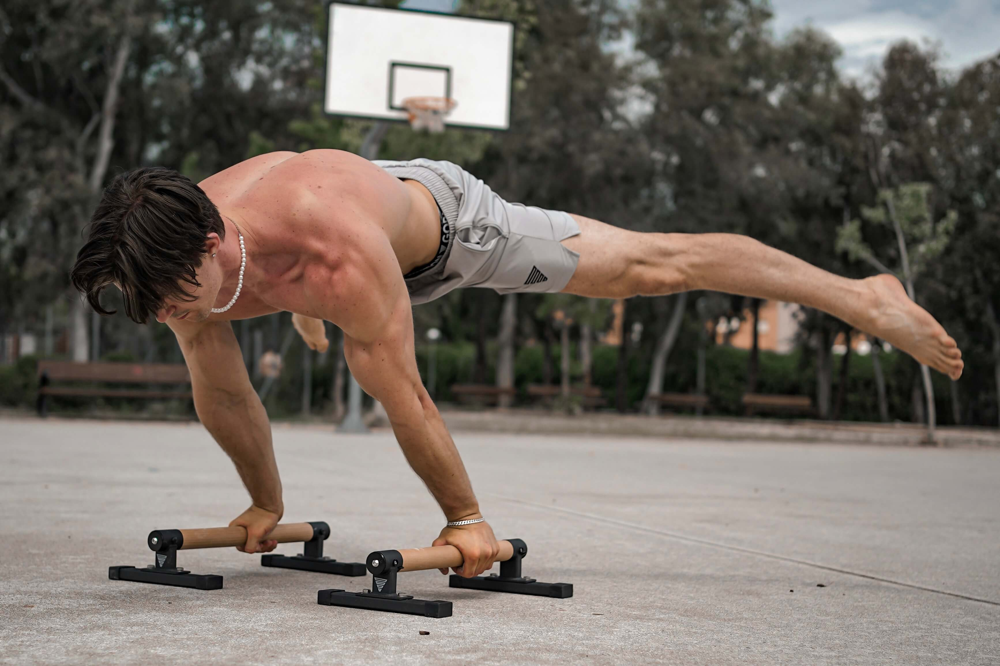

UNLOCKED YOUR FIGHTING SPIRIT
. MMA- Mixed martial arts (MMA) video games capture the intense, fast-paced world of combat sports by letting players step into the digital octagon. These games feature massive rosters of real-world fighters across multiple weight classes, each accurately modeled with their signature striking and grappling styles. Players must master complex control schemes that blend fluid stand-up kickboxing with intricate ground transitions, submissions, and defensive counters. Deep career modes allow users to create a custom fighter, manage training camps, and rise through the ranks from regional promotions to become a world champion

.BOXING - is a combat sport and martial art where two opponents strike each other with closed fists inside a squared ring.
Core Structure and Rules
• The Ring: Typically measures 18 to 22 feet square and is surrounded by ropes.
• Rounds: Professional bouts last up to 12 rounds, while amateur or Olympic bouts usually consist of 3 rounds. Each round lasts 3 minutes for men (often 2 minutes in women's bouts) separated by 1-minute rest breaks.
• Equipment: Fighters wear padded gloves, hand wraps, mouthguards, and specialized boots; amateur boxers also wear headguards.
• Forbidden Actions: Hitting below the belt, hitting on the back of the head or spine, kicking, biting, or wrestling are strictly illegal.
• Basic Punches: The primary strikes are the jab, cross, hook.

.WRESTLING- Wrestling is an ancient combat and grappling sport where two unarmed competitors try to control, throw, or pin each other to the ground.The primary objective is to pin an opponent's shoulders to the mat or win through points awarded for dominant maneuvers and positions. Major styles include Freestyle, Greco-Roman (which prohibits holds below the waist), and folkstyle, each governed by strict rules on a padded mat or ring

.GRAPPLING -Grappling is a close-quarteIt relies on leverage, balance, and technique to neutralize a rival through takedowns, throws, and ground control. Once on the ground, practitioners use submissions like joint locks and chokes to force an opponent to concede. It forms the core foundation of sports like Brazilian Jiu-Jitsu (BJJ), wrestling, and judo.

.JIU-JITSU - a martial art and comba• White Belt: The starting rank for all practitioners, focused on survival, learning basic movements, and building a defensive foundation.
• Blue Belt: The first major milestone where students develop a working technical base, escape bad positions, and start exploring individual styles.
• Purple Belt: An intermediate rank where movement becomes fluid, chain attacks emerge, and practitioners begin refining a personal game.
• Brown Belt: A senior rank focused on technical precision, tight pressure control, efficiency, and mentoring lower belts.
• Black Belt: The level of master-level technical depth and ongoing learning, followed by rare coral and red grandmaster ranks.

.SUMO - , defined as a traditional style of heavy-weight wrestling where two opponents grapple inside a raised ring to force each other out or to the ground.

.RUNNING - Running is a method of terrestrial locomotion where a person moves quickly on foot with an aerial phase where both feet leave the ground at the same time.
Physical Health Benefits
• Heart Health: Lowers cardiovascular disease risk by up to 45%–50% and strengthens the heart muscle to pump blood more efficiently.
• Weight & Metabolism: Burns a high number of calories, improves insulin sensitivity, and helps maintain a healthy weight.
• Muscle & Bone Strength: Builds lower-body muscles (quads, hamstrings, glutes, and calves), strengthens core stability, and increases bone mineral density.
• Immune Support: Regular, moderate aerobic routines can lower your odds of upper respiratory tract infections (like common colds) by up to 43%.
• Longevity: Studies show regular runners have a 25% to 40% reduced risk of premature mortality and live an average of 3 years longer.
.CALISTHENICS - a form of strength training that uses your own body weight as resistance to build muscle, balance, and endurance without needing heavy weights or gym machines.
Key Benefits
• No Cost and Total Convenience: You can practice calisthenics anywhere—at home, in a park, or while traveling—without needing a gym membership or expensive machinery.
• Full-Body Compound Movements: Exercises like push-ups, pull-ups, squats, and dips work multiple muscle groups at the same time, maximizing workout efficiency.
• Improved Core Strength and Posture: Core-heavy movements like planks and leg raises stabilize your spine, lower back, and hips, which helps reduce back pain and fix poor posture.
• Enhanced Balance and Agility: Because you control your own center of gravity, you naturally improve your balance, proprioception (body awareness), and neuromuscular coordination.
• Joint-Friendly Progression: You can scale exercises up or down easily to match any skill level. Beginners can start with wall push-ups or assisted squats, while advanced athletes can work toward handstands, muscle-ups, and planches.

$100
Coach Name - Harishanker,MMA
$80
Coach Name - Shivam,Judo
$70
Coach Name-Aditya,Clasthenic
$50
Coach Name-Ritu,Yoga